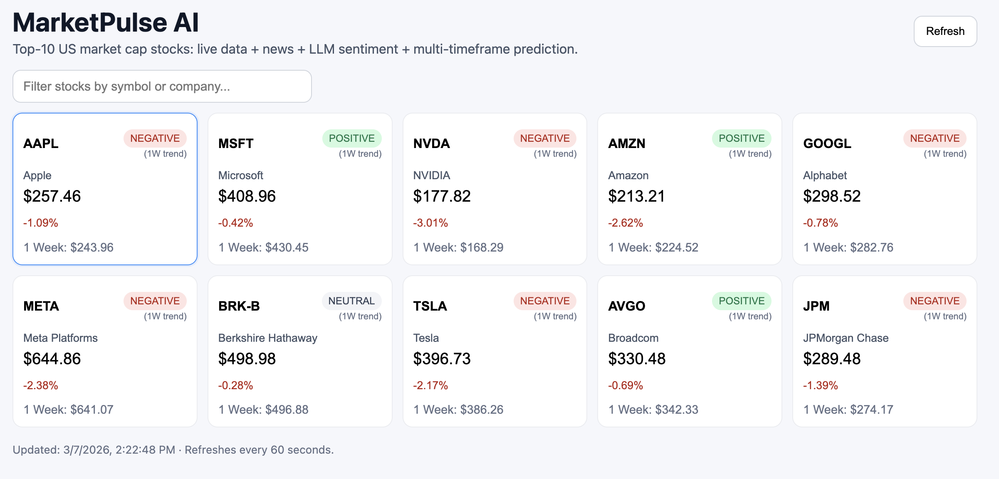

A collection of my recent work and personal projects

Click to expand
MarketPulse AI
Real-time stock intelligence with technical forecasting and news analysis
Full-stack web app for top US stocks that combines real-time price data, technical indicators, multi-timeframe forecasts, interactive candlestick charts with customizable overlays, pattern detection, and LLM-based news impact analysis.
ReactNode.jsExpresstechnicalindicatorsGemini API
Candlestick Charts
5 Timeframes
Live News Feed
MarketPulse AI - Real-Time Stock & News Intelligence
Computational research validating that luck dominates success
Agent-based simulation extending the "Talent vs. Luck" model to test whether solidarity-based redistribution can correct meritocracy's inherent randomness. Demonstrates 92% inequality reduction with moderate policies.
This two-part computational research project validates the landmark paper "Talent vs Luck" (Pluchino et al., 2018) and extends it to test solidarity-based redistribution policies. Through agent-based simulation, it demonstrates that success in pure meritocracies depends more on random luck than talent—and that moderate redistribution (15-25%) can reduce inequality by 92% while achieving perfect social mobility.
Key Findings
Luck Dominates Success: Weak correlation (r=0.31) between talent and wealth; most talented individuals rank ~184th in wealth distribution
Pure Meritocracy Creates Extreme Inequality: Without intervention, Gini coefficient reaches 0.393 (comparable to U.S. inequality)
15-25% Redistribution Optimal: Reduces inequality by 92% (Gini: 0.39 → 0.03) while maintaining 100% upward mobility
Preventive Policies Win: Early intervention prevents 50-80 years of unnecessary inequality vs. reactive approaches
Robust to Tax Avoidance: Even with 60% non-compliance, system achieves 90% inequality reduction
Part 1: Recreated the original TvL model simulating 1,000 agents with normally distributed talent over 40-year careers, validating that random events determine success more than ability.
Part 2: Extended the model with 6 comprehensive experiments testing fixed redistribution, dynamic policies, tax avoidance scenarios, policy timing, multi-dimensional mechanisms, and parameter sensitivity across 100 economic iterations.
Technology & Metrics
Core Stack
Python 3.11 for agent-based simulation
NumPy for statistical distributions
Matplotlib/Seaborn for publication-quality visualizations
Full-stack web application with interactive maps and real-time data
Comprehensive web application designed to enhance the Pokémon Go experience by providing real-time Pokémon radar, Gym and Raid information, and GPS route import/export features.
React.jsNode.jsMongoDBLeaflet.jsExpress
Full-Stack
Interactive Maps
Real-Time Data
PokeFind - Real-Time Pokémon Tracker
Key Features
Real-Time Pokémon Radar: Displays nearby Pokémon spawns on an interactive map with customizable search radius
Location Search: Search any location worldwide using address or GPS coordinates
GPS Route Import/Export: Upload and download GPX files for optimized Pokémon hunting routes
Gym & Raid Battle Information: Live updates on nearby Gym battles and Raid participation
Detailed Pokémon Info: View IV stats, spawn/despawn times, rarity levels, and accuracy ratings
Interactive Maps: Powered by Leaflet with smooth recentering and zoom controls